library (sf)Linking to GEOS 3.10.2, GDAL 3.4.2, PROJ 8.2.1; sf_use_s2() is TRUE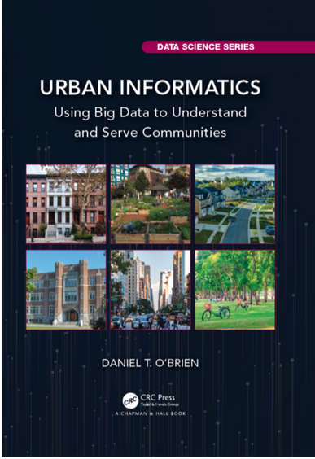
Onlangs schreef Daniel T. O’Brien het boek Urban Informatics: Using Big Data to Understand and Serve Communities(2022), dat ook via internet is te lezen (hier). Het gaat over stedelijke informatica en de manier waarop we tegenwoordig met informatie kunnen omgaan. Stedelijke informatica vraagt om specifieke vaardigheden om met data om te gaan: je moet weten hoe je toegang tot de data kunt krijgen, goede informatie hieruit kunt desilleren, moet analyseren om antwoorden te krijgen op bepaalde vragen, de informatie kunt visualiseren en communiceren naar anderen. Data zijn meer en meer toegankelijk geworden en nieuwe technieken zorgen ervoor dat ze meer gebruikt kunnen worden. De verkregen informatie en inzichten kunnen worden gebruikt wanneer diverse instituten (waaronder publieke instellingen, non-profit instellingen, bedrijven, universiteiten en hogescholen) met elkaar willen samenwerken. Het initiatief om dit boek te schrijven komt voort uit een cursus die O’Brien sinds 2014 voor de Northeastern Universiteit van Boston heeft opgezet rond Big data voor steden. Hij was ook betrokken bij activiteiten voor de stad Boston en de regio. Deze praktische ervaringen zijn in het boek verwerkt.
De ontwikkelingen op het terrein van stedelijke informatica zorgen voor innovaties in politiek, praktijk en diensten die worden geboden door regio’s, steden en wijken. De ontwikkelingen zorgen er ook voor dat er meer onderzoek gedaan kan worden naar wat er in die gemeenschappen gebeurt. Ze zorgen er ook voor dat er nieuwe producten ontstaan die door regio’s, steden en wijken gebruikt kunnen worden (zoals interactieve producten, visualisaties en andere geavanceerde visuele producten, apps). Met de nieuwe mogelijkheden kunnen we beter begrijpen wat er in diverse gemeenschappen gebeurt. Maar ook roepen deze ontwikkelingen nieuwe vragen op die leiden tot aanpassingen in wat er in de regio’s, steden en wijken gebeurt.
Urban Informatics wil wil bijdragen aan het versterken van technische vaardigheden van onderzoekers, dat ze beter toegang krijgen tot data, deze kunnen aanpassen, manipuleren, analyseren en visualiseren. Dat wordt met het programma R gedaan en de pakketten die hierbij ingezet kunnen worden. Het programma is vrij toegankelijk met een sterke gebruikersgemeenschap waar je op terug kunt vallen. Tegelijk wil O’Brien met het boek bijdragen aan conceptuele vooruitgang. Je leert de informatie te begrijpen en te interpreteren en er betekenis aan te verlenen voor het publiek. Je leert omgaan met de sterke en zwakke kanten van de data, welke vragen die wel en niet beantwoord kunnen worden en na te denken over wat je met met de analyses kunt bereiken.
Het boek dat hij schreef bestaat uit vier delen. Het eerste deel (Informatie) gaat over de vaardigheden die je nodig hebt en introduceert R en RStudio; het laat zien hoe je een dataverhaal maakt van bepaalde bestanden; hoe je in de dataset patronen kunt ontdekken; hoe je je eigen variabelen maakt en creëert. Basis pakketten worden geïntroduceerd. Het tweede deel (Meten) laat zien hoe je vanuit de data iets kunnen zeggen over individuen, straten, buurten en dergelijke; het laat zien hoe je data kunt aggregeren en koppelen; hoe je regio’s, steden en wijken in kaart kunt brengen; welke geavanceerde visuele technieken je hierbij kunt gebruiken. Dit deel gaat over de gereedschappen om gegevens te interpreteren en beslissingen te nemen. Ontdekking (het derde deel) gaat over statistische analyse en hoe we meer kunnen zeggen over de relaties tussen variabelen. Het gaat over inferentiële statistiek en correlaties; hoe ongelijkheid tussen groepen kan worden vastgesteld; en hoe mechanismen die ten grondslag liggen aan ongelijkheid blootgelegd kunnen worden
Het vierde en laatste deel (Andere gereedschappen) is een soort reservedeel over nieuwe technieken en technologieen die recent populair zijn geworden op het terrein van stedelijke informatica zoals netwerkanalyse, machine learning, block chain en 5G. In dit deel laat O’Brien zien wat deze nieuwe gereedschappen inhouden, hoe ze werken; staat hij stil bij enkele ethische kwesties hierbij; laat hij zien wat de belangrijkste toepassingen zijn van deze gereedschappen en wijst hij op aanvullende literatuur. Dit deel is beschrijvend van aard en minder praktisch als de drie delen hiervoor.
Urban Informatics is een interessant en leerzaam boek als je regionaal, stedelijk of wijkgericht onderzoek wilt doen. Het geeft je hele duidelijke gereedschappen om hier mee aan het werk te gaan. Het deel Andere gemeenschappen is wat mij betreft aan de magere kant en hier had Daniel O’Brien beter een hoofdstuk kunnen besteden aan communicatie van de resultaten en eigentijdse producten die hierbij te gebruiken zijn. Maar ik heb toch het nodige opgestoken van zijn boek. Hieronder vat ik twee stukken uit zijn boek samen en wel het deel dat gaat Gemeenschappen in kaart brengen en Geavanceerde visuele technieken.
Het achtste hoofdstuk van zijn boek Urban Informatics vertelt iets over Geografische Informatie Systemen en hoe je met ruimtelijke data kunt werken. In dit hoofdstuk maakt vooral gebruik van het pakket sf.
John Snows kaarten over de cholera-uitbraak in Londen halverwege de negentiende eeuw, over de waterpomp in de Broad Street, is zo’m voorbeeld van hoe ruimtelijke data inzicht kunnen geven in een probleem.
Hieronder zie je zijn eerste tekening die hij over dit probleem heeft gemaakt.
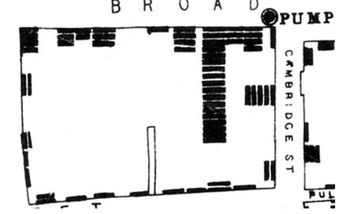
Maar dat deed hij nog met de hand. Tegenwoordig zijn er hele nieuwe systemen en toepassingen waarmee de ruimte in kaart kan worden gebracht en die organisaties in staat stellen om hun eigen ruimte te bekijken, zoals hieronder het wegennetwerk van Londen van de afgelopen 250 jaar.
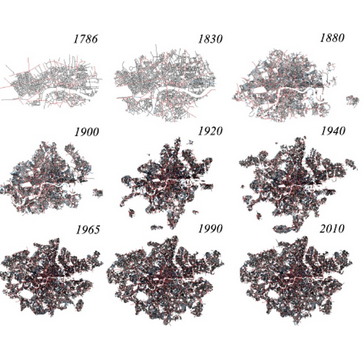 In dit hoofdstuk laat hij zien hoe je met shapefiles kunt werkenm, een datastructuur om ruimtelijke informatie te kunnen structureren. Hij vertelt ons iets over de structuur en complexiteit van shapefiles, over wereldwijde coördinatiesystemen en types van ruimtelijke data (punten, lijnen, polygons en raster). R kan hier goed mee werken.
Het pakket sf (Simple Features) van de Nederlander Edzer Pebesma en anderen (https://r-spatial.github.io/sf/PROPOSAL.html) is hier geschikt voor. Visualisatie en analyse kan binnen dit platform en met bepaalde codes worden uitgevoerd. Maar hiervoor moet je wel sf hebben geinstalleerd. Vervolgens moet je het pakket binnenhalen.
library (sf)Linking to GEOS 3.10.2, GDAL 3.4.2, PROJ 8.2.1; sf_use_s2() is TRUEIn het boek wordt aangegeven waar je de open data kunt vinden. Ik heb de data hier opgeslagen en deze met sf binnengehaald. Het zijn 178 observaties met 17 variabelen. Als je goed kijkt, zie je dat de laatste variabele een geografische variabele is. We zien ook het coördinatiesysteem dat hier gebruikt wordt (NAD83). Met View() of head() kun je dataset beter bekijken.
tracts_geo<-st_read("data8a/Tracts_Boston BARI.shp")Reading layer `Tracts_Boston BARI' from data source
`/Users/harriejonkman/Desktop/HARRIE/HHQuarto/HHquarto/posts/2023-09-04-slimme-steden/data8a/Tracts_Boston BARI.shp'
using driver `ESRI Shapefile'
Simple feature collection with 178 features and 16 fields
Geometry type: POLYGON
Dimension: XY
Bounding box: xmin: -71.19115 ymin: 42.22788 xmax: -70.98471 ymax: 42.40493
Geodetic CRS: NAD83Als je iets meer wilt weten over het coördinatiesysteem, kun je dat zo doen;
st_crs(tracts_geo)Coordinate Reference System:
User input: NAD83
wkt:
GEOGCRS["NAD83",
DATUM["North American Datum 1983",
ELLIPSOID["GRS 1980",6378137,298.257222101,
LENGTHUNIT["metre",1]]],
PRIMEM["Greenwich",0,
ANGLEUNIT["degree",0.0174532925199433]],
CS[ellipsoidal,2],
AXIS["latitude",north,
ORDER[1],
ANGLEUNIT["degree",0.0174532925199433]],
AXIS["longitude",east,
ORDER[2],
ANGLEUNIT["degree",0.0174532925199433]],
ID["EPSG",4269]]Laten we nu de shapefile beter bekijken.
plot(tracts_geo)Warning: plotting the first 9 out of 16 attributes; use max.plot = 16 to plot
all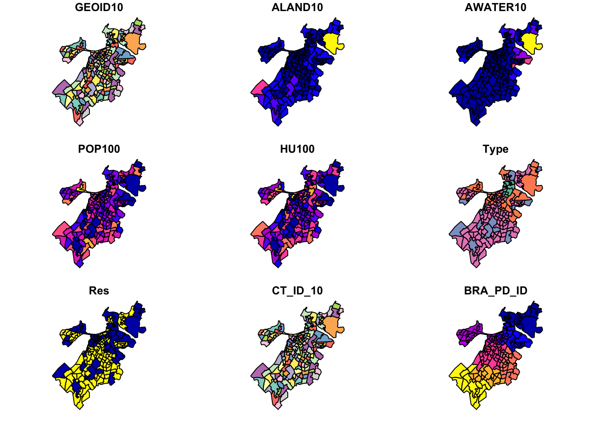
Het laat de eerste tien variabelen zien.
Als we alleen de kaart van Bosten willen zien, dan plotten we alleen de laatste, de geografische variabele.
plot(st_geometry(tracts_geo))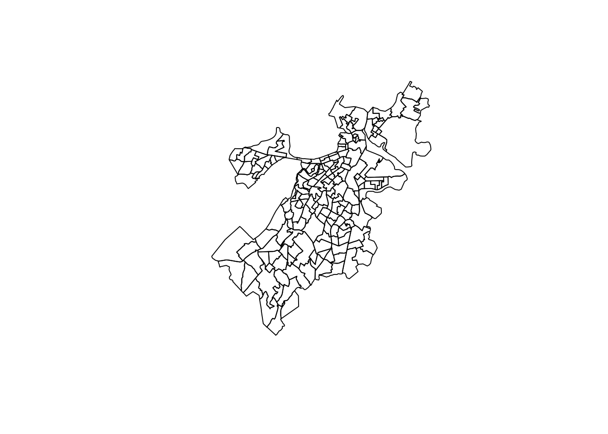
Hier kun je ook een enkele variabele aan toevoegen, bv. Res, de variabele die aangeeft op de wijk (census tract) residentieel of niet is. Laten wel residentieel rood afdrukken.
plot(st_geometry(tracts_geo))
plot(st_geometry(tracts_geo[tracts_geo$Res==1,]),
add=TRUE, col='red')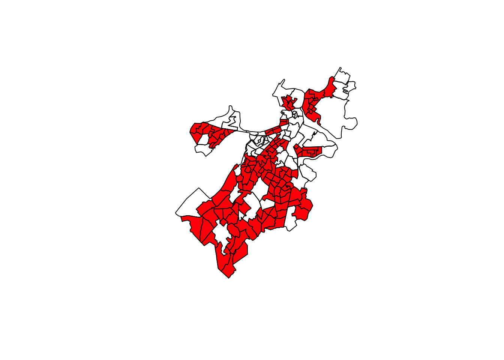
Maar wat als we een continue variabele willen afdrukken, bv populatie in 2010?
plot(tracts_geo$POP100, main = 'Population in 2010',
breaks = 'quantile')Warning in plot.window(...): "breaks" is not a graphical parameterWarning in plot.xy(xy, type, ...): "breaks" is not a graphical parameterWarning in axis(side = side, at = at, labels = labels, ...): "breaks" is not a
graphical parameter
Warning in axis(side = side, at = at, labels = labels, ...): "breaks" is not a
graphical parameterWarning in box(...): "breaks" is not a graphical parameterWarning in title(...): "breaks" is not a graphical parameter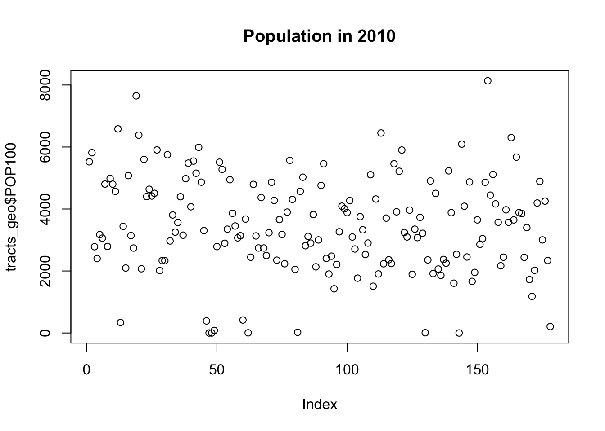
In geval van een continue variabele moeten we het anders uitdrukken en niet $ maar [] gebruiken.
plot(tracts_geo['POP100'], main = 'Population in 2010',
breaks = 'quantile')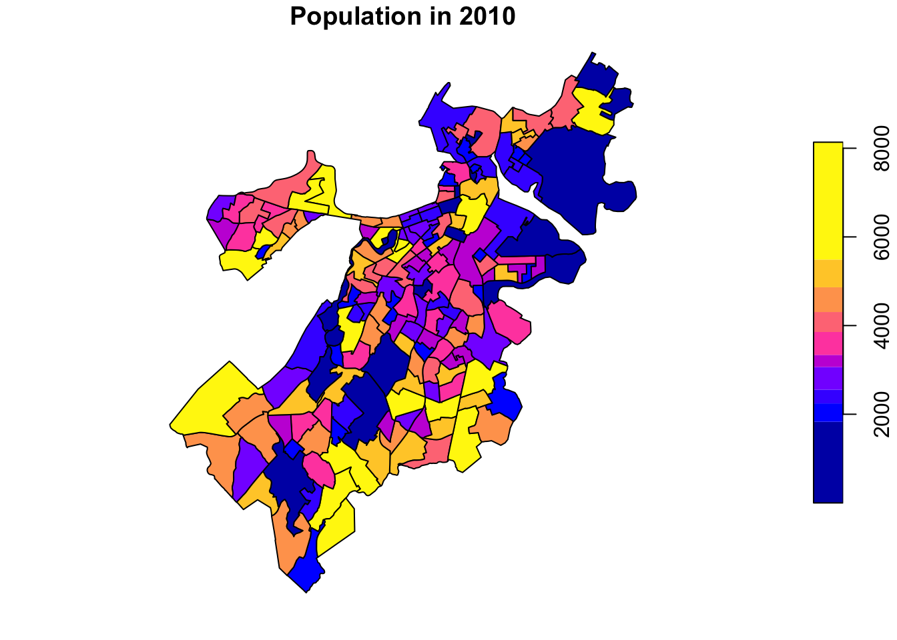
Laten we nu een kaart maken met meer informatie en dat betekent dat we met verschillende lagen gaan werken om het helemaal naar onze hand te zetten. We volgen nu enkele stappen:
1. we importeren en voegen eerst aanvullende data toe aan het databestand.
2. Daarna creëren we een basis kaart.
3. Dan maken we een kaart met verschillende lagen.
4. Tot slot passen we deze helemaal aan.
De shapefill omvat de 178 census tracts van Boston-stad, zeg maar de wijken. Deze file combineren we met een andere dataset met aanvullende gegevens. Dat zit in dit excelsheet dat je zo kunt binnenhalen zoals O’Brien in zijn boek beschrijft (en zoals opendata zijn binnen te halen). Dat heb ik gedaan en je vindt het hier.
demographics<-read.csv("data8a/ACS_1418_TRACT.csv")Combineer beide bestanden op basis van een sleutelvariabele (in dit geval CT_ID_10).
tracts_geo<-merge(tracts_geo,demographics,by='CT_ID_10',all.x=TRUE)We hebben eerst een basismap nodig waarop we onze kaart plaatsen. Daarin zien we Boston in het geheel. Hiervoor hebben ggplot2 nodig en ggmap.
library(ggplot2)
library(ggmap)Google's Terms of Service: https://cloud.google.com/maps-platform/terms/.Please cite ggmap if you use it! See citation("ggmap") for details.Boston<-get_map(location=c(left = -71.193799,
bottom = 42.22,
right = -70.985746,
top = 42.43),
source="stamen")Source : http://tile.stamen.com/terrain/12/1237/1513.pngSource : http://tile.stamen.com/terrain/12/1238/1513.pngSource : http://tile.stamen.com/terrain/12/1239/1513.pngSource : http://tile.stamen.com/terrain/12/1240/1513.pngSource : http://tile.stamen.com/terrain/12/1237/1514.pngSource : http://tile.stamen.com/terrain/12/1238/1514.pngSource : http://tile.stamen.com/terrain/12/1239/1514.pngSource : http://tile.stamen.com/terrain/12/1240/1514.pngSource : http://tile.stamen.com/terrain/12/1237/1515.pngSource : http://tile.stamen.com/terrain/12/1238/1515.pngSource : http://tile.stamen.com/terrain/12/1239/1515.pngSource : http://tile.stamen.com/terrain/12/1240/1515.pngSource : http://tile.stamen.com/terrain/12/1237/1516.pngSource : http://tile.stamen.com/terrain/12/1238/1516.pngSource : http://tile.stamen.com/terrain/12/1239/1516.pngSource : http://tile.stamen.com/terrain/12/1240/1516.pngSource : http://tile.stamen.com/terrain/12/1237/1517.pngSource : http://tile.stamen.com/terrain/12/1238/1517.pngSource : http://tile.stamen.com/terrain/12/1239/1517.pngSource : http://tile.stamen.com/terrain/12/1240/1517.pngBostonmap<-ggmap(Boston)
Bostonmap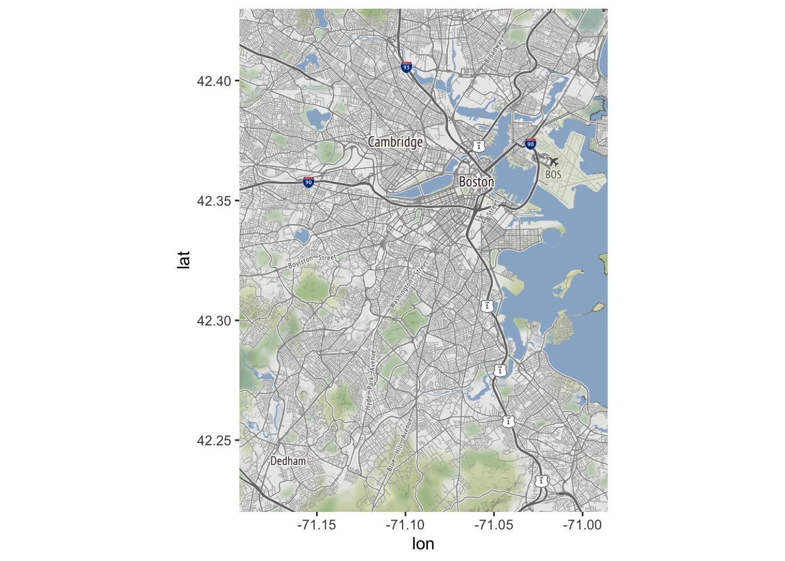
Nu kunnen met verschillende lagen werken en de twee kaarten aan elkaar koppelen. Dat doen we zo als de residentiële variabele zichtbaar willen maken.
Bostonmap + geom_sf(data=tracts_geo, aes(fill=as.factor(Res)),
inherit.aes = FALSE)Coordinate system already present. Adding new coordinate system, which will
replace the existing one.
Je kunt het ook zo doen.
ggmap(Boston) + geom_sf(data=tracts_geo, aes(fill=as.factor(Res)),
inherit.aes = FALSE)Coordinate system already present. Adding new coordinate system, which will
replace the existing one.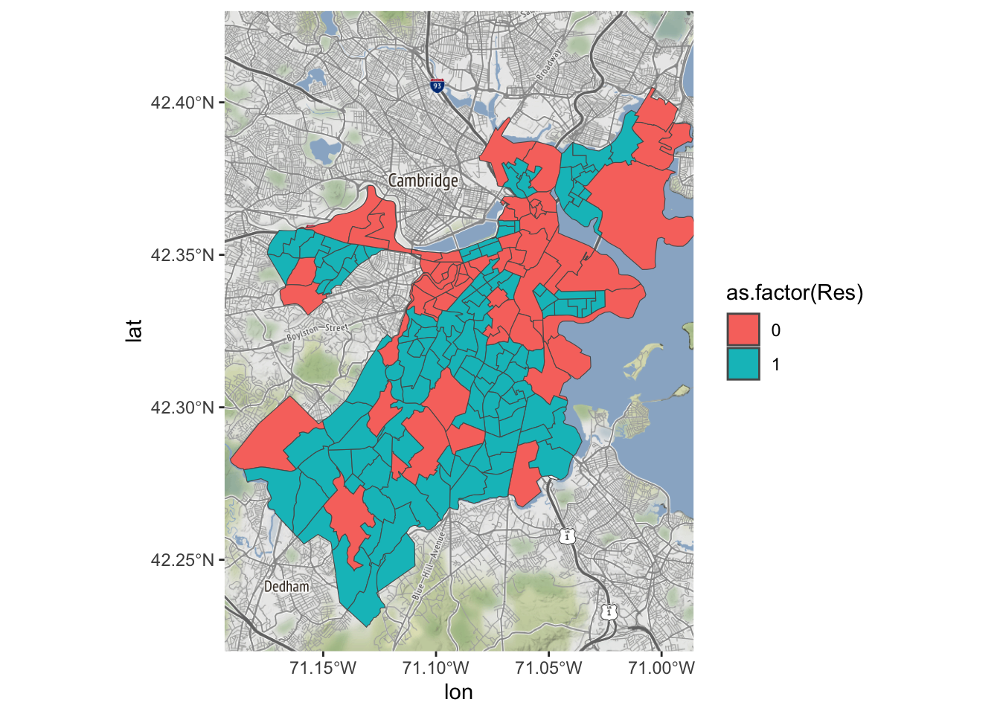
Je kunt ook een andere variabele gebruiken.
Bostonmap + geom_sf(data=tracts_geo, aes(fill=MedHouseIncome),
inherit.aes = FALSE)Coordinate system already present. Adding new coordinate system, which will
replace the existing one.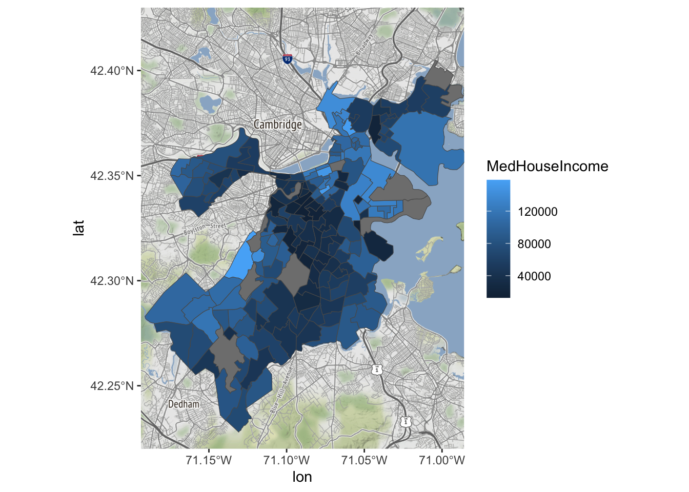
Laten we het nu verder naar onze hand zetten.
Bostonmap+ geom_sf(data=tracts_geo[tracts_geo$POP100>500,],
aes(fill=MedHouseIncome),inherit.aes = FALSE)Coordinate system already present. Adding new coordinate system, which will
replace the existing one.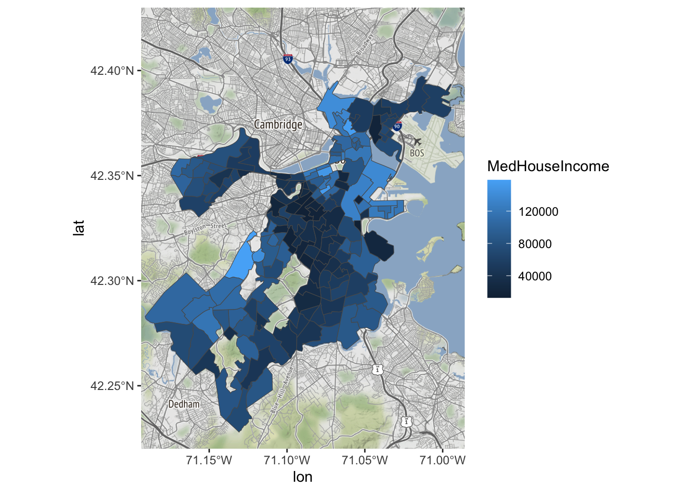
We kunnen ook andere kleur gebruiken, bv. een die gaat van groen (hoog) naar rood (laag) , dat overgaat vanaf het gemiddelde.
Bostonmap+ geom_sf(data=tracts_geo[tracts_geo$POP100>500,],
aes(fill=MedHouseIncome),inherit.aes = FALSE)+
scale_fill_gradient(high = "green", low = "red")Coordinate system already present. Adding new coordinate system, which will
replace the existing one.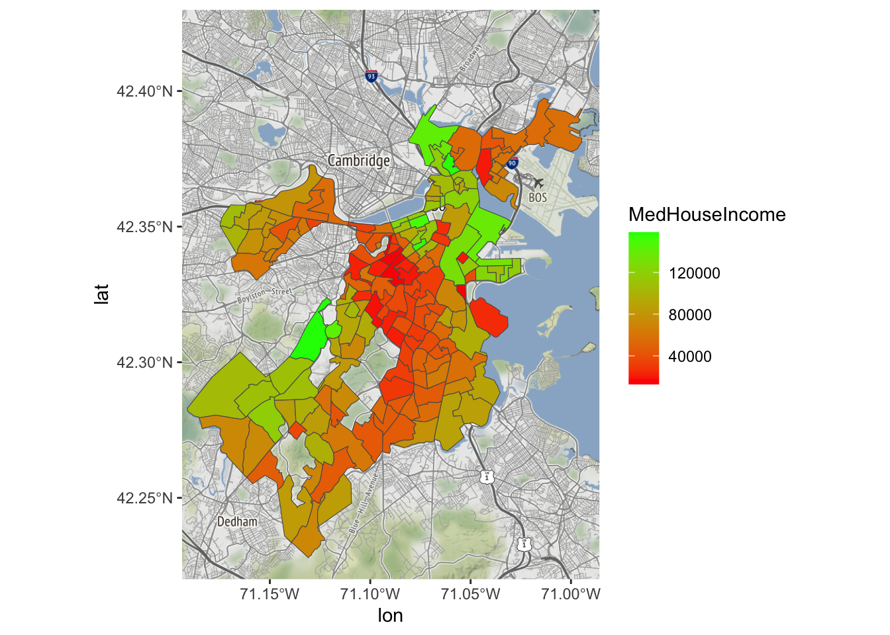
Laten we het label aanpassen en er Nederlands van maken.
Bostonmap+ geom_sf(data=tracts_geo[tracts_geo$POP100>500,],
aes(fill=MedHouseIncome),inherit.aes = FALSE)+
scale_fill_gradient(high = "red", low = "green")+
labs(fill='Mediaan Huishouden \nInkomen')Coordinate system already present. Adding new coordinate system, which will
replace the existing one.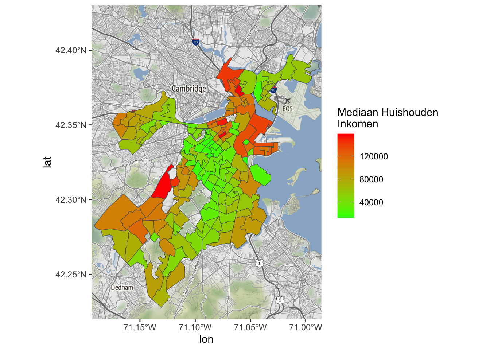
O’Brien, D.T. (2022). Urban Informatics: Using Big Data to Understand and Serve Communities. Boca Raton, FL, Chapman Hall / CRC Press.
zie ook: hier